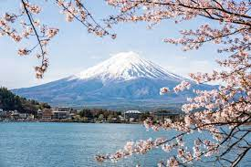

Tentang Wisataku
Gunung Fuji (富士山 Fujisan, bahasa Jepang: [ɸɯꜜ(d)ʑisaɴ] ( simak)), terletak di pulau Honshu, adalah gunung tertinggi di Jepang, dengan ketinggian 3.776,24 m (12.389,2 kaki). Gunung ini adalah gunung berapi tertinggi kedua yang terletak di sebuah pulau di benua Asia (setelah Gunung Kerinci di pulau Sumatera), dan puncak tertinggi ketujuh dari sebuah pulau di Bumi. Gunung Fuji adalah gunung berapi aktif yang terakhir meletus pada tahun 1707 hingga 1708. Gunung ini terletak sekitar 100 km (62 mil) barat daya Tokyo dan dapat terlihat dari sana pada hari-hari cerah. Kerucut Gunung Fuji berbentuk sangat simetris, dan tertutup salju selama sekitar lima bulan dalam setahun. Gunung ini biasanya digunakan sebagai ikon budaya Jepang dan sering digambarkan dalam karya seni dan fotografi, serta dikunjungi oleh banyak wisatawan dan pendaki gunung.
Contact Center


Mount Fuji
Layanan Kami
Gunung Fuji adalah salah satu dari "Tiga Gunung Suci" (三霊山 Sanreizan) bersama dengan Gunung Tate dan Gunung Haku. Gunung ini merupakan salah satu Situs Bersejarah Jepang. Gunung itu ditambahkan ke Daftar Warisan Dunia sebagai Situs Budaya pada 22 Juni 2013. Menurut UNESCO, Gunung Fuji telah "menginspirasi seniman dan penyair dan menjadi objek ziarah selama berabad-abad". UNESCO mengakui 25 situs budaya yang menarik di dalam wilayah Gunung Fuji. 25 lokasi ini termasuk gunung dan kuil Shinto, Fujisan Hongū Sengen Taisha, serta Kuil Kepala Buddha Taisekiji yang didirikan pada 1290, yang kemudian digambarkan oleh seniman ukiyo-e Jepang Katsushika Hokusai.
Kanji saat ini untuk Gunung Fuji terdiri dari dua karakter, yaitu 富 dan 士, masing-masing berarti "kekayaan" atau "berlimpah" dan "orang yang berstatus". Namun, namanya ada sebelum kanji, dan karakter ini adalah ateji, artinya mereka dipilih karena pengucapannya sesuai dengan suku katanya tetapi tidak memiliki arti yang berkaitan dengan gunung.
Hubungin Kami
Email: support@fujimountainguides.zendesk.com
Social Media